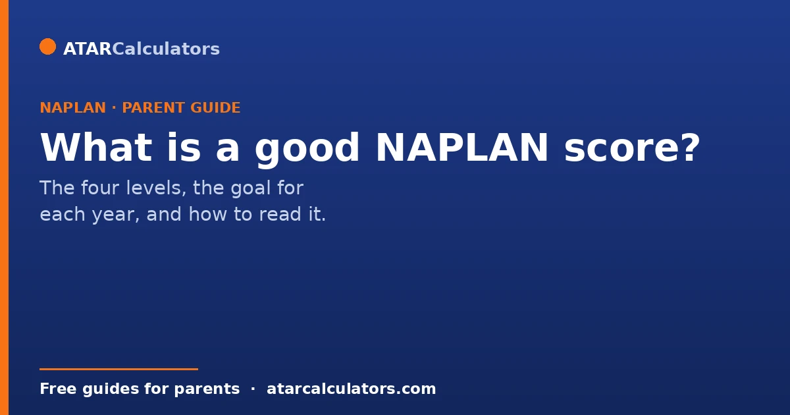
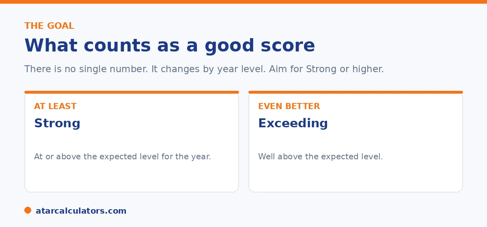

A good NAPLAN score means reaching the Strong level for your child's year. Strong is the level expected for that year, and it is the goal for most children. Exceeding is higher again. There is no single good number, because each year level uses a different scale. This guide explains what good looks like, why there is no pass mark, and how to judge your child's result fairly.
Every parent wants to know one thing when the report lands. Is this a good score? It is a fair question, and the answer is simpler than the report makes it look.
Since 2023, NAPLAN does not use a pass mark or a single number. It uses four levels. A good result means landing in the Strong level, or above, for your child's year. You can check any score in our NAPLAN score calculator.
Key takeaways
- A good result is Strong or Exceeding for your child's year.
- Strong means at or above the expected level. It is the goal.
- There is no single good number. The scale differs by year level.
- A good score in Year 3 is not the same number as a good score in Year 9.
- Look at the level and the scaled score together.
- One result is a snapshot, not a verdict.
What a good score looks like now
Before 2023, parents looked for a band number. That system is gone. NAPLAN now reports four levels, and a good result means reaching the Strong level for your child's year.

Strong means your child is at or just above the level expected for their year. That is a good, solid result. Exceeding means they are well above it. Developing means they are below the expected level, with the basics in place. Needs additional support means extra help would help them catch up.
Why there is no single good score
The NAPLAN test is online and adaptive. Children do not all answer the same questions, so each result becomes a scaled score for fairness. More importantly, the scale rises as children get older.
A Year 3 child and a Year 9 child are not measured against the same bar. A score that is good for Year 3 would be low for Year 9, because Year 9 students are expected to know much more. So you cannot judge a number on its own. You judge it against the expected level for that year, which is what Strong tells you.
Good by year level: what to expect
NAPLAN sets the expected level for each year tested: Year 3, Year 5, Year 7, and Year 9. Reaching Strong means your child is meeting the bar for their year, whichever year that is.
The point to remember is progress. As your child moves from Year 3 to Year 9, the score needed to stay at Strong gets higher each time. So a child who sits at Strong in Year 3 and again at Strong in Year 5 is making solid progress, even though the two reports look different. Use the level as your guide, then check the scaled score to see where they sit inside it.
Want to see what a score means for your child's exact year level?
Open the NAPLAN score calculator →How to judge your child's result
Read the report in this order. First, the level for each area. Strong or above is good. Second, the scaled score, which shows where your child sits inside the level. Third, the shaded box, which is the typical range for the year. A dot inside the box means your child is in the middle group. Fourth, the national average, so you can see how they compare across Australia.
Then step back and look at progress over time. A child moving up from Developing to Strong over two tests is a great sign, even if they are not at Exceeding. Progress matters more than any single label.
What if my child is Developing?
Developing is not a fail. NAPLAN has no pass or fail. Developing means your child is below the expected level for their year, but they understand the basics. It simply points to an area to work on.
Many children are Developing in one area and Strong in another. Focus on the lower area with small, steady steps at home, and talk to the teacher about what will help most. For the full picture of how to read each part, see our guide on how to read the NAPLAN report.
Should you aim for Exceeding?
Exceeding is a great result, but it is not the goal for every child, and it should not become a source of pressure. Strong is a solid, healthy place to be. It means your child is meeting the expectations for their year.
If your child is already at Strong and enjoys a challenge, you can stretch them with harder reading or richer maths problems. If they are finding things hard, chasing Exceeding will only add stress. Aim for steady growth, not a perfect score.
It is worth being deliberate about this. This is because the pull to aim for the top level catches many well-meaning parents and often backfires. Strong genuinely means your child is meeting the expected standard for their year. That is exactly where a child should be. It is a good result in its own right, not a stepping stone to somewhere better. Exceeding shows a child working above the year's expectations. That is wonderful when it reflects genuine ease and enjoyment. But it is not a target every child should be pushed towards, and treating it as the only acceptable outcome can turn a healthy result into a source of anxiety. The right approach depends on the individual child. One who is comfortably at Strong and relishes a challenge can be gently stretched with richer, more demanding material. The point is not to chase a label, but that they enjoy it and it feeds real curiosity. A child who is finding the standard hard is far better served by consolidating the foundations calmly than by being pressed toward a level that will only frustrate them. In both cases the healthier aim is steady growth over time rather than a perfect score in a single test. NAPLAN is one snapshot on one set of days. And a child's long-term development matters far more than whether they land in Strong or Exceeding on a given occasion. Celebrate a Strong result, support growth where it is natural, and resist letting Exceeding become a benchmark that every child must hit.
A single test is a snapshot
One NAPLAN sitting is a single morning of your child's year. A child can have an off day, feel anxious, or misread the format. So a result is a snapshot, not a verdict on your child.
The more useful picture comes from the trend across years, and from your child's everyday class work. If those tell a different story from one NAPLAN result, trust the fuller picture.
Reading a result in context
Context matters when you read a score. Was your child unwell on the day? New to the online format? Nervous? Any of these can pull a result below a child's true ability.
So treat the number as information, not a label. A slightly lower result in one area is a prompt to look closer, not a reason to worry.
Comparing fairly across schools
NAPLAN is national, so a proficiency level means the same thing everywhere. A Strong result is Strong whether your child is at a large city school or a small country one.
Be careful comparing your child to a particular school's average, though. Averages hide a wide range, and your child's own result against the national standard is what the level already tells you.
A level measures against a standard
The proficiency level compares your child to the national standard for their year, not to their classmates. Two children who are both Strong may still have different scaled scores.
So the level answers the question 'is my child meeting the standard for their year?' rather than 'where do they rank?'. For most families, that standard question is the more useful one, and the level answers it clearly.
Common questions
What is a good NAPLAN score?
A good result is reaching the Strong level for your child's year. Strong means they are at or above the expected level. Exceeding is higher again. There is no single good number, because the scale differs by year level.
Is there a pass mark in NAPLAN?
No. NAPLAN is not a pass or fail test. It shows where your child sits using four levels: Exceeding, Strong, Developing, and Needs additional support. There is no pass or fail line.
What is a good NAPLAN score for Year 3?
For Year 3, a good result is reaching Strong, which is the level expected for Year 3. Exceeding is above that. The exact scaled score for Strong is set for Year 3 and is lower than the score needed for older years.
What is a good NAPLAN score for Year 9?
For Year 9, a good result is again Strong. But the scaled score needed is higher than for younger years, because Year 9 students are expected to know more. Use the level, not the raw number, to judge it.
Is Developing a bad score?
No. Developing means your child is below the expected level for their year, but the basics are there. It is an area to work on, not a failure. Many children are Developing in one area and Strong in another.
How can I help my child improve?
Focus on the lower area with small, regular steps. Read together for a few minutes a night, talk about numbers in daily life, and ask the teacher what will help most. Steady practice beats cramming.
Does a good NAPLAN score help with selective schools?
Not directly. Selective schools run their own entry test. NAPLAN may be looked at as background, but it does not decide entry. See our guide on NAPLAN and selective entry for more.
See what your child's score means
Enter a NAPLAN score and year level to see the level and where it sits. Free, and no signup.
Open the NAPLAN score calculator →Related guides
This guide is general information for parents, not formal advice. NAPLAN reporting can change, so always check the official details on the National Assessment Program (NAP) site, and talk to your child's teacher. Reviewed by the ATARCalculators Editorial Team.